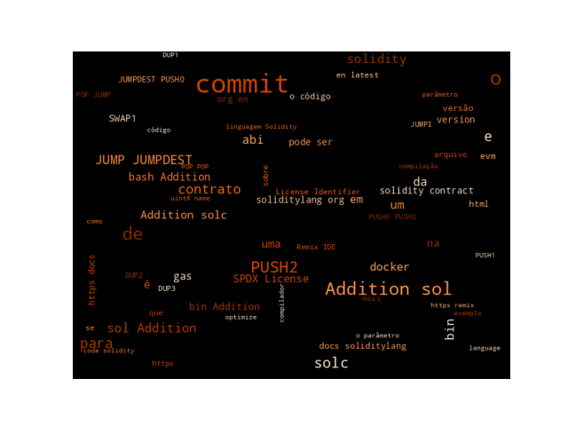

8 Prática sobre Ferramentas de Desenvolvimento e Frameworks Ethereum: Estudo sobre Solidity e solc
Estudo sobre Solidity e solc
Solidity, conhecermos e explorarmos as características da linguagem. No desenvolvimento de Contratos Inteligentes iremos utilizar a linguagem Solidity. A proposta desta aula prática é instalarmos o compilador para a linguagem Solidity, o solc. Ele converte código de alto nível dos contratos escritos em Solidity, para bytecode da Ethereum Virtual Machine EVM. Iremos executar a compilação de exemplos, gerando as saídas possíveis com o solc, visualizando os opcodes, o código binário, fazendo estimativas de consumo de gas, gerando código de montagem para a EVM e verificando algumas opções de otimização.
8.1 Introdução
No desenvolvimento de Contratos Inteligentes iremos utilizar a linguagem Solidity. O Compilador para a linguagem Solidity é o solc. O solc converte código de alto nível dos contratos, escritos em Solidity, para bytecode da Ethereum Virtual Machine EVM.
8.2 Instalando o solc
O comando para instalação do solc em distribuições Ubuntu ou derivados do Debian:
$ sudo add-apt-repository ppa:ethereum/ethereum
$ sudo apt-get update
$ sudo apt-get install solcOutras distribuições derivadas do Arch Linux, o pacote solidity é deve ser instalado:
$ pacman -S solidityFeita a instalação, para verificar a versão instalada execute o comando:
$ solc --version
solc, the solidity compiler commandline interface
Version: 0.8.27+commit.40a35a09.Linux.g++Uma outra opção é executar o solc via docker. O link apresenta as formas de instalação do Compilador Solidity. E mostra como uma das possibilidades o uso do docker para que uma versão específica possa ser instalada e executada isoladamente no dentro do container. No Código 8.I apresenta o resultado da execução do solc na versão atual, que não estava instalada ainda e docker fez o download e instalação automaticamente.
$ sudo docker run ethereum/solc:stable --version
Unable to find image 'ethereum/solc:stable' locally
stable: Pulling from ethereum/solc
4357c739450e: Pull complete
Digest: sha256:c74c43c73e64f14d43dc4c61776375abe3609c0118ef3eb34d99b59696647256
Status: Downloaded newer image for ethereum/solc:stable
solc, the solidity compiler commandline interface
Version: 0.8.27+commit.40a35a09.Linux.g++
$ No Código 8.II apresenta a execução do solc via docker com um exemplo de saída na stdout definindo um diretório de trabalho -w e um volume virtual -v, estou utilizando o diretório onde estamos executando, mas um outro diretório poderia ser definido. A execução também é feita utilizando outra versão do solc, a versão 0.8.21.
$ sudo docker run -v $(pwd):$(pwd) -w $(pwd) -i ethereum/solc:0.8.21 --version
solc, the solidity compiler commandline interface
Version: 0.8.21+commit.40a35a09.Linux.g++
$Todas as versões e imagens disponíveis do solc podem ser conferidas no Docker Hub. Detalhes da versão 0.8.21 podem ser vistos no link.
8.3 Compilando um Exemplo
Para verificar algumas funcionalidades do compilador solc vamos criar um contrato simples, com o nome Addition.sol e com o conteúdo presente no Código 8.III.
pragma solidity ^0.8.28;
contract Addition {
uint8 x;
function addx(uint8 y, uint8 z ) public {
x = y + z;
}
function retrievex() view public returns (uint8) {
return x;
}
}Mais detalhes do uso do solc podem ser vistos em Using the Compiler.
Salve esse arquivo em um diretório Addition e acesse esse diretório:
$ mkdir Addition
$ cd Addition
[Addition]$ ls
Addition.sol
[Addition]$Se a versão do solidity na sua máquina for diferente, basta ajustar no arquivo fonte colocando a versão correta no pragma solidity.
Para a compilação simples execute:
[Addition]$ solc Addition.sol
Warning: SPDX license identifier not provided in source file. Before publishing, consider adding a comment containing "SPDX-License-Identifier: <SPDX-License>" to each source file. Use "SPDX-License-Identifier: UNLICENSED" for non-open-source code. Please see https://spdx.org for more information.
--> Addition.sol
[Addition]$ Esse "Warning: SPDX license identifier not provided in source file. Before publishing, consider adding a comment containing 'SPDX-License-Identifier: <SPDX-License>' to each source file. Use 'SPDX-License-Identifier: UNLICENSED' for non-open-source code. Please see https://spdx.org for more information." está avisando para colocar uma SPDX-License. Uma lista completa das licenças e seus identificadores pode ser vista em https://spdx.org/licenses/.
Basta adicionar um comentário na primeira linha com o identificador conforme o Código 9.VI.
// SPDX-License-Identifier: MIT
pragma solidity ^0.8.21;
contract Addition {
uint8 x;
function addx(uint8 y, uint8 z ) public {
x = y + z;
}
function retrievex() view public returns (uint8) {
return x;
}
}Incluindo-se a linha de especificação da licença a saída de uma compilação simples será:
[Addition]$ solc Addition.sol
Compiler run successful. No output generated.
[Addition]$ 8.4 Visualizando o bytecode gerado
O solc tem alguns parâmetros interessantes que nos permite verificar o formato binário do contrato, que é a sequência dos bytecodes gerados para a EVM:
[Addition]$ solc --bin Addition.sol
Warning: SPDX license identifier not provided in source file. Before publishing, consider adding a comment containing "SPDX-License-Identifier: <SPDX-License>" to each source file. Use "SPDX-License-Identifier: UNLICENSED" for non-open-source code. Please see https://spdx.org for more information.
--> Addition.sol
======= Addition.sol:Addition =======
Binary:
608060405234801561001057600080fd5b506101f6806100206000396000f3fe608060405234801561001057
600080fd5b50600436106100365760003560e01c806336718d801461003b578063ac04e0a014610057575b60
0080fd5b610055600480360381019061005091906100f2565b610075565b005b61005f61009e565b60405161
006c9190610141565b60405180910390f35b8082610081919061018b565b6000806101000a81548160ff0219
16908360ff1602179055505050565b60008060009054906101000a900460ff16905090565b600080fd5b6000
60ff82169050919050565b6100cf816100b9565b81146100da57600080fd5b50565b6000813590506100ec81
6100c6565b92915050565b60008060408385031215610109576101086100b4565b5b60006101178582860161
00dd565b9250506020610128858286016100dd565b9150509250929050565b61013b816100b9565b82525050
565b60006020820190506101566000830184610132565b92915050565b7f4e487b7100000000000000000000
000000000000000000000000000000000000600052601160045260246000fd5b6000610196826100b9565b91
506101a1836100b9565b9250828201905060ff8111156101ba576101b961015c565b5b9291505056fea26469
70667358221220e0ec16eaf684603f4f7c74f327a27e4a1a981dfac0cb258479ffe452abda2e4964736f6c63
4300081100338.5 Estimando a taxa gas
Como uma taxa de gas é cobrada para cada operação que a EVM executa, é uma boa prática estimar o gas antes de implantar um contrato em uma rede ativa. O parâmetro --gas pode ser utilizado para fazer essa estimativa.
[Addition]$ solc --gas Addition.sol
======= Addition.sol:Addition =======
Gas estimation:
construction:
147 + 100400 = 100547
external:
addx(uint8,uint8): infinite
retrievex(): 24798.6 Gerando a ABI
A Application Binary Interface (ABI) é uma forma padrão de interagir com os contratos, sabermos como os métodos estão disponíveis e quais parâmetros utilizam. Para a gerar a ABI do contrato utilize o solc com o parâmetro --abi, conforme o Código 8.VII.
[Addition]$ solc --abi Addition.sol
======= Addition.sol:Addition =======
Contract JSON ABI
[{"inputs":[{"internalType":"uint8","name":"y","type":"uint8"},{"internalType":"uint8",
"name":"z","type":"uint8"}],"name":"addx","outputs":[],"stateMutability":"nonpayable",
"type":"function"},{"inputs":[],"name":"retrievex","outputs":[{"internalType":"uint8",
"name":"","type":"uint8"}],"stateMutability":"view","type":"function"}]8.7 Processo de Compilação Completo
O processo de compilação completo do contrato Addition.sol pode ser feito com o comando:
[Addition]$ solc --bin --abi -o bin Addition.sol
Compiler run successful. Artifact(s) can be found in directory "bin".Se erros ocorrerem serão mostrados no terminal, caso contrário o compilador irá mostrar uma mensagem de sucesso. Com o parâmetro de diretório de saída -o bin, serão gerados os arquivos no diretório bin:
- Addition.abi: Contém a
ABIdo contrato no formatoJSON. - Addition.bin: Contém a representação binária do código do contrato.
O conteúdo de cada um dos arquivos pode ser visualizado. Código 8.VI apresenta o binário gerado.
[Addition]$ cat bin/Addition.bin
608060405234801561001057600080fd5b506101f6806100206000396000f3fe608060405234801561001057
600080fd5b50600436106100365760003560e01c806336718d801461003b578063ac04e0a014610057575b60
0080fd5b610055600480360381019061005091906100f2565b610075565b005b61005f61009e565b60405161
006c9190610141565b60405180910390f35b8082610081919061018b565b6000806101000a81548160ff0219
16908360ff1602179055505050565b60008060009054906101000a900460ff16905090565b600080fd5b6000
60ff82169050919050565b6100cf816100b9565b81146100da57600080fd5b50565b6000813590506100ec81
6100c6565b92915050565b60008060408385031215610109576101086100b4565b5b60006101178582860161
00dd565b9250506020610128858286016100dd565b9150509250929050565b61013b816100b9565b82525050
565b60006020820190506101566000830184610132565b92915050565b7f4e487b7100000000000000000000
000000000000000000000000000000000000600052601160045260246000fd5b6000610196826100b9565b91
506101a1836100b9565b9250828201905060ff8111156101ba576101b961015c565b5b9291505056fea26469
70667358221220e0ec16eaf684603f4f7c74f327a27e4a1a981dfac0cb258479ffe452abda2e4964736f6c63
430008110033A ABI gerada para o contrato pode ser vista no Código 8.VII.
[Addition]$ cat bin/Addition.abi
[{"inputs":[{"internalType":"uint8","name":"y","type":"uint8"},{"internalType":"uint8",
"name":"z","type":"uint8"}],"name":"addx","outputs":[],"stateMutability":"nonpayable",
"type":"function"},{"inputs":[],"name":"retrievex","outputs":[{"internalType":"uint8",
"name":"","type":"uint8"}],"stateMutability":"view","type":"function"}]8.8 Visualizando os Opcodes
Os opcodes da instruções geradas para a EVM podem ser visualizados compilando-se com o parâmetro --opcodes:
[Addition]$ solc --opcodes Addition.sol
======= Addition.sol:Addition =======
Opcodes:
PUSH1 0x80 PUSH1 0x40 MSTORE CALLVALUE DUP1 ISZERO PUSH1 0xE JUMPI PUSH0 PUSH0 REVERT JUMPDEST POP PUSH2 0x1E5 DUP1 PUSH2 0x1C PUSH0 CODECOPY PUSH0 RETURN INVALID PUSH1 0x80 PUSH1 0x40 MSTORE CALLVALUE DUP1 ISZERO PUSH2 0xF JUMPI PUSH0 PUSH0 REVERT JUMPDEST POP PUSH1 0x4 CALLDATASIZE LT PUSH2 0x34 JUMPI PUSH0 CALLDATALOAD PUSH1 0xE0 SHR DUP1 PUSH4 0x36718D80 EQ PUSH2 0x38 JUMPI DUP1 PUSH4 0xAC04E0A0 EQ PUSH2 0x54 JUMPI JUMPDEST PUSH0 PUSH0 REVERT JUMPDEST PUSH2 0x52 PUSH1 0x4 DUP1 CALLDATASIZE SUB DUP2 ADD SWAP1 PUSH2 0x4D SWAP2 SWAP1 PUSH2 0xE8 JUMP JUMPDEST PUSH2 0x72 JUMP JUMPDEST STOP JUMPDEST PUSH2 0x5C PUSH2 0x9A JUMP JUMPDEST PUSH1 0x40 MLOAD PUSH2 0x69 SWAP2 SWAP1 PUSH2 0x135 JUMP JUMPDEST PUSH1 0x40 MLOAD DUP1 SWAP2 SUB SWAP1 RETURN JUMPDEST DUP1 DUP3 PUSH2 0x7E SWAP2 SWAP1 PUSH2 0x17B JUMP JUMPDEST PUSH0 PUSH0 PUSH2 0x100 EXP DUP2 SLOAD DUP2 PUSH1 0xFF MUL NOT AND SWAP1 DUP4 PUSH1 0xFF AND MUL OR SWAP1 SSTORE POP POP POP JUMP JUMPDEST PUSH0 PUSH0 PUSH0 SWAP1 SLOAD SWAP1 PUSH2 0x100 EXP SWAP1 DIV PUSH1 0xFF AND SWAP1 POP SWAP1 JUMP JUMPDEST PUSH0 PUSH0 REVERT JUMPDEST PUSH0 PUSH1 0xFF DUP3 AND SWAP1 POP SWAP2 SWAP1 POP JUMP JUMPDEST PUSH2 0xC7 DUP2 PUSH2 0xB2 JUMP JUMPDEST DUP2 EQ PUSH2 0xD1 JUMPI PUSH0 PUSH0 REVERT JUMPDEST POP JUMP JUMPDEST PUSH0 DUP2 CALLDATALOAD SWAP1 POP PUSH2 0xE2 DUP2 PUSH2 0xBE JUMP JUMPDEST SWAP3 SWAP2 POP POP JUMP JUMPDEST PUSH0 PUSH0 PUSH1 0x40 DUP4 DUP6 SUB SLT ISZERO PUSH2 0xFE JUMPI PUSH2 0xFD PUSH2 0xAE JUMP JUMPDEST JUMPDEST PUSH0 PUSH2 0x10B DUP6 DUP3 DUP7 ADD PUSH2 0xD4 JUMP JUMPDEST SWAP3 POP POP PUSH1 0x20 PUSH2 0x11C DUP6 DUP3 DUP7 ADD PUSH2 0xD4 JUMP JUMPDEST SWAP2 POP POP SWAP3 POP SWAP3 SWAP1 POP JUMP JUMPDEST PUSH2 0x12F DUP2 PUSH2 0xB2 JUMP JUMPDEST DUP3 MSTORE POP POP JUMP JUMPDEST PUSH0 PUSH1 0x20 DUP3 ADD SWAP1 POP PUSH2 0x148 PUSH0 DUP4 ADD DUP5 PUSH2 0x126 JUMP JUMPDEST SWAP3 SWAP2 POP POP JUMP JUMPDEST PUSH32 0x4E487B7100000000000000000000000000000000000000000000000000000000 PUSH0 MSTORE PUSH1 0x11 PUSH1 0x4 MSTORE PUSH1 0x24 PUSH0 REVERT JUMPDEST PUSH0 PUSH2 0x185 DUP3 PUSH2 0xB2 JUMP JUMPDEST SWAP2 POP PUSH2 0x190 DUP4 PUSH2 0xB2 JUMP JUMPDEST SWAP3 POP DUP3 DUP3 ADD SWAP1 POP PUSH1 0xFF DUP2 GT ISZERO PUSH2 0x1A9 JUMPI PUSH2 0x1A8 PUSH2 0x14E JUMP JUMPDEST JUMPDEST SWAP3 SWAP2 POP POP JUMP INVALID LOG2 PUSH5 0x6970667358 0x22 SLT KECCAK256 SWAP7 0xE0 SWAP1 0xC1 PUSH19 0xC05C2CA051070C65ED8CFCD1170FEA74963B6C LT 0xD9 0xD4 DUP12 SELFDESTRUCT 0xAA PUSH25 0x2764736F6C634300081B003300000000000000000000000000
$ 8.9 Gerando Código assembly da EVM
Um arquivo com o código de montagem para a EVM pode ser gerado compilando-se com o parâmetro --asm:
[Addition]$ solc --asm Addition.sol
======= Addition.sol:Addition =======
EVM assembly:
/* "Addition.sol":57:236 contract Addition {... */
mstore(0x40, 0x80)
callvalue
dup1
iszero
tag_1
jumpi
0x00
dup1
revert
tag_1:
pop
dataSize(sub_0)
dup1
dataOffset(sub_0)
0x00
codecopy
0x00
return
stop
/* Parte do Codigo foi suprimida */
auxdata: 0xa2646970667358221220e5f1966e6e792d9172ed599ecf6962ab997f6ed71728a96f12ff8bce
8e7aa41c64736f6c63430008150033
}8.10 Otimizando o Código
Antes de implementar seu contrato, ative o otimizador ao compilar usando o parâmetro --optimize. Por padrão, o otimizador otimizará o contrato assumindo que ele é chamado \(200\) vezes ao longo de seu tempo de vida (mais especificamente, ele pressupõe que cada opcode seja executado cerca de \(200\) vezes).
[Addition]$ solc --bin --optimize Addition.sol > Addition.sol.opt.bin
[Addition]$ solc --bin Addition.sol > Addition.sol.nop.bin
[Addition]$ ls
Addition.sol Addition.sol.nop.evm Addition.sol.opt.evm
Addition.sol.nop.bin Addition.sol.opt.bin binVerificando se o tamanho do arquivo mudou com a opção de otimização.
[Addition]$ cat Addition.sol.nop.bin
======= Addition.sol:Addition =======
Binary:
608060405234801561000f575f80fd5b506101e58061001d5f395ff3fe608060405234801561000f575f80fd
5b5060043610610034575f3560e01c806336718d8014610038578063ac04e0a014610054575b5f80fd5b6100
52600480360381019061004d91906100e8565b610072565b005b61005c61009a565b60405161006991906101
35565b60405180910390f35b808261007e919061017b565b5f806101000a81548160ff021916908360ff1602
179055505050565b5f805f9054906101000a900460ff16905090565b5f80fd5b5f60ff82169050919050565b
6100c7816100b2565b81146100d1575f80fd5b50565b5f813590506100e2816100be565b92915050565b5f80
604083850312156100fe576100fd6100ae565b5b5f61010b858286016100d4565b925050602061011c858286
016100d4565b9150509250929050565b61012f816100b2565b82525050565b5f6020820190506101485f8301
84610126565b92915050565b7f4e487b71000000000000000000000000000000000000000000000000000000
005f52601160045260245ffd5b5f610185826100b2565b9150610190836100b2565b9250828201905060ff81
11156101a9576101a861014e565b5b9291505056fea2646970667358221220e5f1966e6e792d9172ed599ecf
6962ab997f6ed71728a96f12ff8bce8e7aa41c64736f6c63430008150033[Addition]$ cat Addition.sol.opt.bin
======= Addition.sol:Addition =======
Binary:
608060405234801561000f575f80fd5b5061011c8061001d5f395ff3fe6080604052348015600e575f80fd5b5
0600436106030575f3560e01c806336718d80146034578063ac04e0a0146045575b5f80fd5b6043603f366004
6090565b605d565b005b5f546040805160ff9092168252519081900360200190f35b6065818360bc565b5f805
460ff191660ff929092169190911790555050565b803560ff81168114608b575f80fd5b919050565b5f806040
838503121560a0575f80fd5b60a783607c565b915060b360208401607c565b90509250929050565b60ff81811
6838216019081111560e057634e487b7160e01b5f52601160045260245ffd5b9291505056fea2646970667358
221220e3fcb6de1b60e34fc67ddc7b0261e658b6f68bdd243310b77c486da33ef634c764736f6c63430008150
033
[Addition]$Se você deseja que a implantação do contrato inicial seja mais barata e as execuções posteriores da função mais caras, defina-o como --optimize-runs=1.
Se você espera muitas transações e não se importa com custos de implantação e tamanho de saída mais altos, defina --optimize-runs para um número alto. Este parâmetro tem efeitos no seguinte (isso pode mudar no futuro):
o tamanho da pesquisa binária na rotina de despacho de função.
a forma como constantes como números grandes ou strings são armazenadas.
Verifique se mudanças aconteceram com os arquivos gerados, sem otimização (nop), com \(1\) (opt1) e com \(1000000\) (opt1000000) no parâmetro de otimização.
[Addition]$ solc --bin Addition.sol > Addition.sol.nop.bin
[Addition]$ solc --bin --optimize --optimize-runs=1 Addition.sol > Addition.sol.opt1.bin
[Addition]$ solc --bin --optimize --optimize-runs=1000000 Addition.sol > Addition.sol.opt1000000.bin8.11 Gerando Código para versões da EVM
Quando compilamos o código de um contrato podemos especificar a versão da Ethereum Virtual Machine alvo para evitar características e comportamentos particulares. O parâmetro --evm-version <VERSION> pode ser definido com VERSION assumindo um dos valores: homestead, tangerineWhistle, spuriousDragon, byzantium, constantinople, petersburg, istanbul, berlin, london, paris, shanghai.
[Addition]$ solc --evm-version <VERSION> contract.solSalve o conteúdo em um script.sh ou execute diretamente no terminal.
#!/bin/bash
for version in homestead tangerineWhistle spuriousDragon byzantium constantinople petersburg istanbul berlin london paris shanghai
do
solc --opcodes --evm-version ${version} Addition.sol > Addition.sol.${version}.opcodes
donePara comparar duas versões de códigos:
[Addition]$ solc --asm --evm-version berlin Addition.sol | diff -u - <(solc --asm --evm-version shanghai Addition.sol)
--- - 2023-09-19 18:12:08.460565670 -0300
+++ /dev/fd/63 2023-09-19 18:12:08.451646055 -0300
@@ -436,6 +436,6 @@
pop
jump // out
- auxdata: 0xa2646970667358221220544d507b7aed2fcb193a2143aa69a7bba83bb2bddf725da5759765d1f015
d92564736f6c63430008150033
+ auxdata: 0xa2646970667358221220e5f1966e6e792d9172ed599ecf6962ab997f6ed71728a96f12ff8bce8e7a
a41c64736f6c63430008150033
}Comparando a quantidade de gas para cada versão de código:
[Addition]$ solc --gas --evm-version berlin Addition.sol | diff -u - <(solc --gas --evm-version shanghai Addition.sol)
--- - 2023-09-19 19:09:17.295326849 -0300
+++ /dev/fd/63 2023-09-19 19:09:17.280724897 -0300
@@ -2,7 +2,7 @@
======= Addition.sol:Addition =======
Gas estimation:
construction:
- 147 + 100400 = 100547
+ 145 + 97000 = 97145
external:
addx(uint8,uint8): infinite
- retrievex(): 2479
+ retrievex(): 2473
[Addition]$ Mais detalhes sobre targets podem ser vistos em https://docs.soliditylang.org/en/v0.8.21/using-the-compiler.html#target-options.
8.12 Visualizando uma saída mais completa
Podemos combinar os parâmetros para ter uma saída mais completa separando em arquivos:
[rag@ryzen-nitro ]$ solc -o output-dir --bin --ast-compact-json --abi --asm --ir --gas --overwrite --pretty-json Addition.solPara uma lista completa de parâmetros aceitos pelo solc execute no teminal o comando solc --help.
Mais detalhes do uso do solc podem ser vistos na página da documentação: Using the Compiler.
8.13 Linguagem Solidity
Solidity é profundamente influencida por C++, mas também carrega conceitos de linguagens como Python, JavaScript e outras.
A documentação da Linguagem Solidity pode ser acessada no link.
A versão atual do compilador é a v0.8.31.
A sintaxe da linguagem Solidity (Gramática) pode ser acessada no link.
Uma documentação sobre Solidity está disponível na seção “The Solidity language”, no Capítulo 14, página \(448\) do livro texto (178948620180101?) disponível no link Capítulo-14-Development-Tools-and-Frameworks.
8.14 Atividade: Compilar Exemplo e testar comandos Solidity
Abra a Remix IDE e digite o código do contrato do exemplo ou utilize a API que aceita passagem de parâmetros na URL.
O código do contrato exemplo pode ser transformado em Base64 e enviado ao Remix via URL conforme o link.
[Addition]$ cat Addition.sol | base64
Ly8gU1BEWC1MaWNlbnNlLUlkZW50aWZpZXI6IE1JVApwcmFnbWEgc29saWRpdHkgXjAuOC4yMTsKCmNvbnRyYWN0IEFkZGl0aW9uIHsKICAgdWludDggeDsKCiAgIGZ1bmN0aW9uIGFkZHgodWludDggeSwgdWludDggeiApIHB1YmxpYyB7CiAgICAgIHggPSB5ICsgejsKICAgfQogICBmdW5jdGlvbiByZXRyaWV2ZXgoKSB2aWV3IHB1YmxpYyByZXR1cm5zICh1aW50OCkgewogICAgICByZXR1cm4geDsKICAgfQp9Cg==O código pode ser passado na URL do Remix com o parâmetro code, conforme no código.
https://remix.ethereum.org/?#language=solidity&version=soljson-v0.8.31+commit.7893614a.js&code=Ly8gU1BEWC1MaWNlbnNlLUlkZW50aWZpZXI6IE1JVApwcmFnbWEgc29saWRpdHkgXjAuOC4yMTsKCmNvbnRyYWN0IEFkZGl0aW9uIHsKICAgdWludDggeDsKCiAgIGZ1bmN0aW9uIGFkZHgodWludDggeSwgdWludDggeiApIHB1YmxpYyB7CiAgICAgIHggPSB5ICsgejsKICAgfQogICBmdW5jdGlvbiByZXRyaWV2ZXgoKSB2aWV3IHB1YmxpYyByZXR1cm5zICh1aW50OCkgewogICAgICByZXR1cm4geDsKICAgfQp9Cg==&lang=en&optimize=false&runs=200&evmVersion=shanghai&call=fileManagerAo chamar a URL a interface do Remix IDE será carregada com o arquivo do contrato que foi passado codificado no parâmetro code. A Figura 8.I apresenta o contrato carregado no editor da Remix IDE.
Na interface do Remix IDE é possível escolher entre as versões do compilador solc:
"0.1.1+commit.6ff4cd6", "0.1.2+commit.d0d36e3", "0.1.3+commit.028f561d", "0.1.4+commit.5f6c3cdf", "0.1.5+commit.23865e39", "0.1.6+commit.d41f8b7c", "0.1.7+commit.b4e666cc", "0.2.0+commit.4dc2445e", "0.2.1+commit.91a6b35f", "0.2.2+commit.ef92f566", "0.3.0+commit.11d67369", "0.3.1+commit.c492d9be", "0.3.2+commit.81ae2a78", "0.3.3+commit.4dc1cb14", "0.3.4+commit.7dab8902", "0.3.5+commit.5f97274a", "0.3.6+commit.3fc68da5", "0.4.0+commit.acd334c9", "0.4.10+commit.f0d539ae", "0.4.11+commit.68ef5810", "0.4.15+commit.8b45bddb", "0.4.16+commit.d7661dd9", "0.4.17+commit.bdeb9e52", "0.4.18+commit.9cf6e910", "0.4.19+commit.c4cbbb05", "0.4.1+commit.4fc6fc2c", "0.4.20+commit.3155dd80", "0.4.21+commit.dfe3193c", "0.4.22+commit.4cb486ee", "0.4.23+commit.124ca40d", "0.4.24+commit.e67f0147", "0.4.25+commit.59dbf8f1", "0.4.26+commit.4563c3fc", "0.4.2+commit.af6afb04", "0.4.3+commit.2353da71", "0.4.4+commit.4633f3de", "0.4.5+commit.b318366e", "0.4.6+commit.2dabbdf0", "0.4.7+commit.822622cf", "0.4.8+commit.60cc1668", "0.4.9+commit.364da425", "0.5.0+commit.1d4f565a", "0.5.10+commit.5a6ea5b1", "0.5.11+commit.22be8592", "0.5.11+commit.c082d0b4", "0.5.12+commit.7709ece9", "0.5.13+commit.5b0b510c", "0.5.14+commit.01f1aaa4", "0.5.15+commit.6a57276f", "0.5.16+commit.9c3226ce", "0.5.17+commit.d19bba13", "0.5.1+commit.c8a2cb62", "0.5.2+commit.1df8f40c", "0.5.3+commit.10d17f24", "0.5.4+commit.9549d8ff", "0.5.5+commit.47a71e8f", "0.5.6+commit.b259423e", "0.5.7+commit.6da8b019", "0.5.8+commit.23d335f2", "0.5.9+commit.c68bc34e", "0.5.9+commit.e560f70d", "0.6.0+commit.26b70077", "0.6.10+commit.00c0fcaf", "0.6.11+commit.5ef660b1", "0.6.12+commit.27d51765", "0.6.1+commit.e6f7d5a4", "0.6.2+commit.bacdbe57", "0.6.3+commit.8dda9521", "0.6.4+commit.1dca32f3", "0.6.5+commit.f956cc89", "0.6.6+commit.6c089d02", "0.6.7+commit.b8d736ae", "0.6.8+commit.0bbfe453", "0.6.9+commit.3e3065ac", "0.7.0+commit.9e61f92b", "0.7.1+commit.f4a555be", "0.7.2+commit.51b20bc0", "0.7.3+commit.9bfce1f6", "0.7.4+commit.3f05b770", "0.7.5+commit.eb77ed08", "0.7.6+commit.7338295f", "0.8.0+commit.c7dfd78e", "0.8.10+commit.fc410830", "0.8.11+commit.d7f03943", "0.8.12+commit.f00d7308", "0.8.13+commit.abaa5c0e", "0.8.14+commit.80d49f37", "0.8.15+commit.e14f2714", "0.8.16+commit.07a7930e", "0.8.17+commit.8df45f5f", "0.8.18+commit.87f61d96", "0.8.19+commit.7dd6d404", "0.8.1+commit.df193b15", "0.8.20+commit.a1b79de6", "0.8.21+commit.d9974bed", "0.8.2+commit.661d1103", "0.8.3+commit.8d00100c", "0.8.4+commit.c7e474f2", "0.8.5+commit.a4f2e591", "0.8.6+commit.11564f7e", "0.8.7+commit.e28d00a7", "0.8.8+commit.dddeac2f", "0.8.9+commit.e5eed63a", ... , "0.8.26+commit.8a97fa7a", "0.8.27+commit.40a35a09", "0.8.28+commit.7893614a", E entre as versões da EVM:
"cancun", "shanghai", "paris", "london", "berlin", "istambul", "petersburg", "constantinople", "byzantium", "spuriousDragon", "tangerineWhistle", "homestead"O resultado da compilação pode ser obtido fazendo o download na Opção Compilation Details. A Figura 8.II apresenta a tela para escolha dos itens a serem baixados ou baixar todos os detalhes em um único arquivo `JSON``.
A Figura 8.III mostra a visualização do binário gerado e da estimativa de Gás para a implantação e execução.
8.15 Considerações Finais
A prática apresenta a utilização básica do Remix. Utilize o Capítulo sugerido na Leitura Recomendada e a documentação sobre Solidity para aprender um pouco mais sobre a linguagem. O objetivo principal é a familiaridade com a sintaxe da linguagem Solidity.
Uma documentação sobre Solidity está disponível na seção “The Solidity language”, no Capítulo 14, página \(448\) do livro texto (178948620180101?) disponível no link Capítulo-14-Development-Tools-and-Frameworks.
8.16 Leitura Recomendada
Capítulo 14: Development Tools and Frameworks
9 Word Cloud
